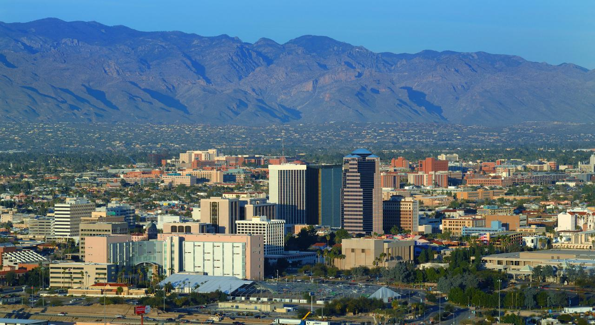

Tucson Arizona |
 |
 |
543,242 |
32.253460 |
-110.911789 |
Tucson is a city in Arizona, in the Sonoran desert, surrounded by several mountain ranges, including the Sierra de Santa Catalina. The restored mansions of the El Presidio Historic District and the adobe row houses of the Barrio Histórico reflect the city's beginnings in the 19th century. |
Seoul Korea |
 |
 |
9,779,000 |
37.5660000 |
126.9784000 |
Seoul, pronounced, officially Seoul Special City, is the capital of South Korea since the creation of this republic in 1948, the historical capital of Korea for more than 600 years, and the most populous city on the Korean peninsula. |
Tokyo Japan |
 |
 |
13,960,000 |
35.6895 |
139.69171 |
Tokyo, Japan's bustling capital, mixes the ultra-modern and the traditional, from neon-lit skyscrapers to historic temples. The opulent Shinto Meiji Shrine is known for its towering gate and surrounding forests. |
Singapore |
 |
 |
5,454,000 |
1.290270 |
103.851959 |
Singapore, whose official name is the Republic of Singapore, is a sovereign island country in Asia, made up of sixty-three islands, whose form of government is the parliamentary republic. Its territory is divided into five community development councils. |
Paris Fance |
 |
 |
2,161,000 |
48.85341 |
2.3488 |
Paris, the capital of France, is a major European city and a world center of art, fashion, gastronomy and culture. Its 19th-century urban landscape is crisscrossed by wide boulevards and the Seine River. Aside from such landmarks as the Eiffel Tower and the 12th-century gothic Notre Dame Cathedral, the city is famous for its café culture and designer fashion shops along Rue du Faubourg Saint-Honoré. |